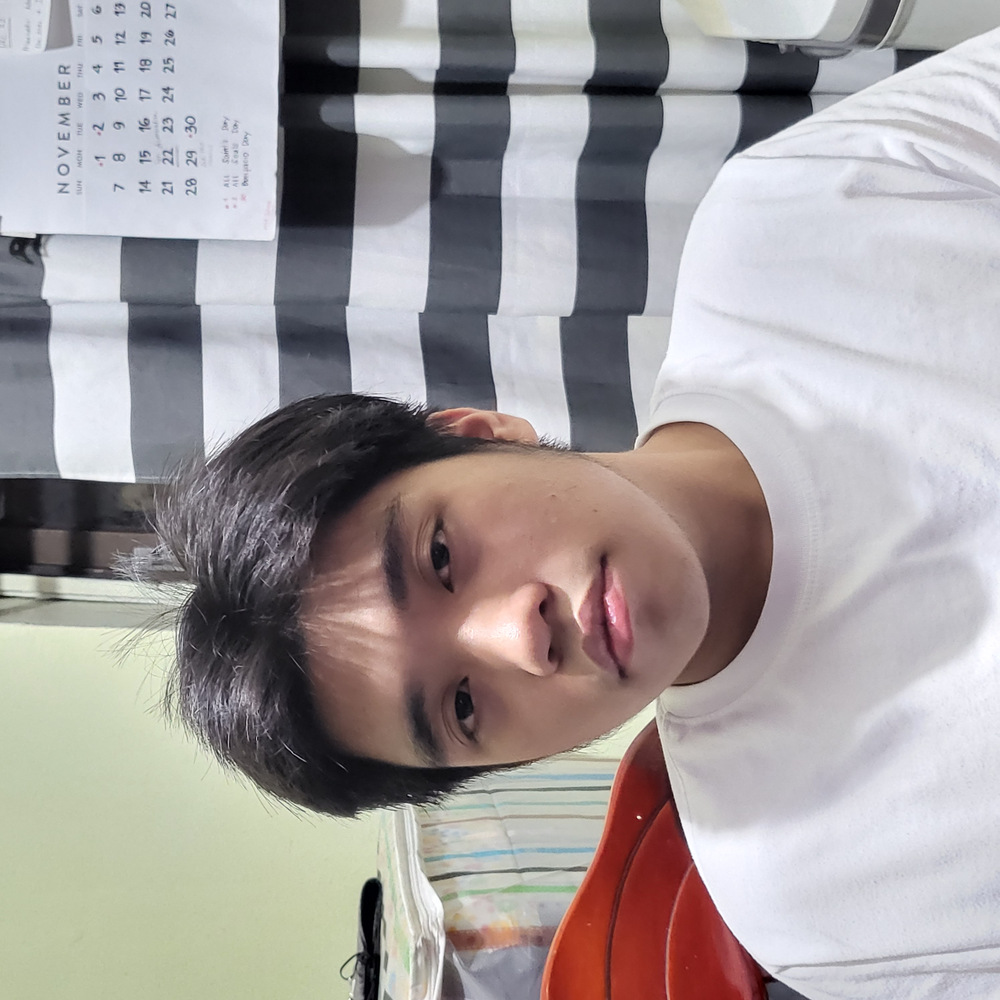
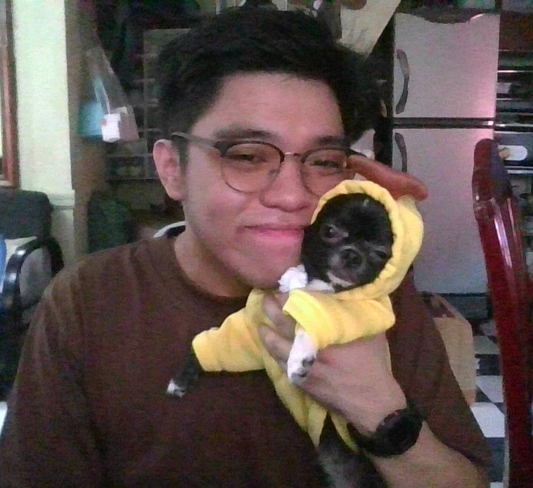
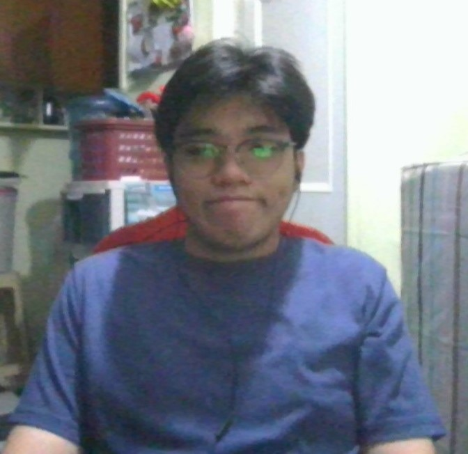
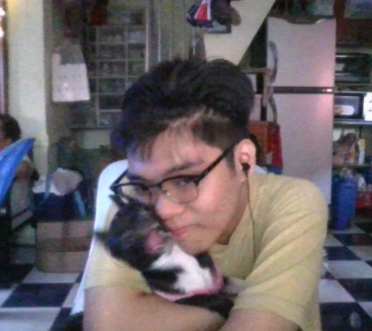
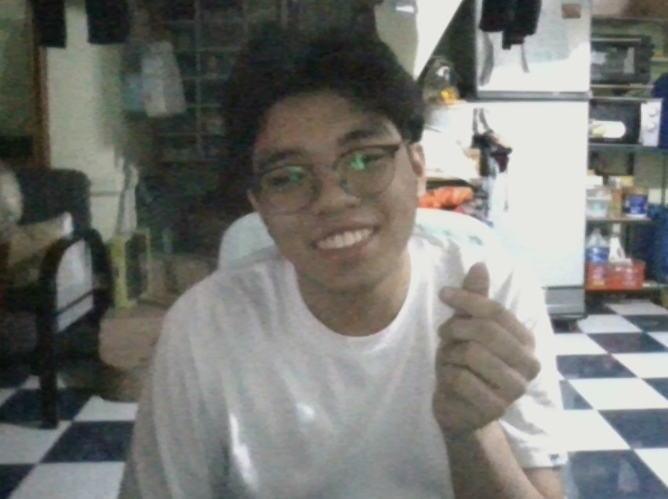
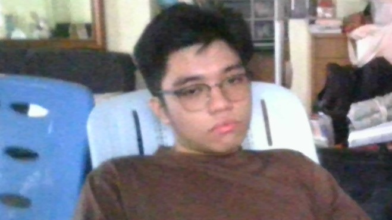
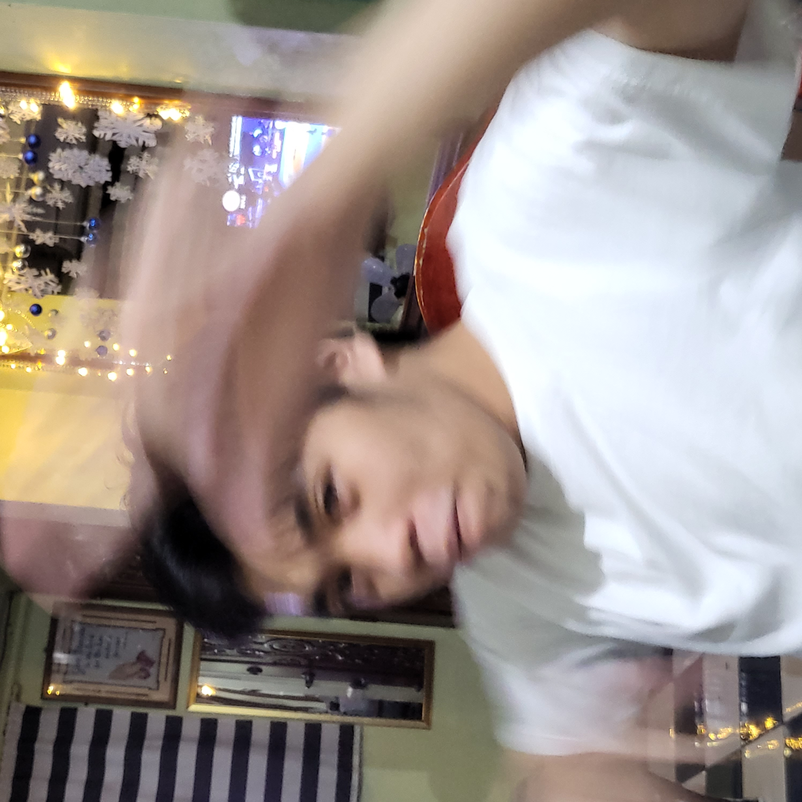

|
 |
About Me
19 years old / IT Student / Web Developer
Nicolas N. Ponce III Was born on April 22, 2002, he is currently studying at the University of the East Caloocan taking a course of Bachelor of Science In Information Technology (BSIT) he loves playing games and ultimately sleeping when he has free time when he is bored he always plays video games with his friends or watches movies or just random videos on YouTube. He also became a leader a multiple times in his SHS days some weakness of his is leadership, public speaking, easily and gets easily distracted and some of his strengths are time management, hardworking, work oriented, and determined to finish said task. He also dreams to be a successful IT expert in the field because he wants to repay his family for all the things they did for him. He believes in a saying that
“I was raised to treat the janitor with the same respect as the CEO”
because he believes that no matter what is your status in life you should always treat everyone with the same level of respect anyone.


|
|
|
.png)


Elementary
La consolacion college caloocan
496 A. Mabini Street Sangandaan,
Caloocan, Philippines,
2009-2014
High School
University of the East
105 Samson Road, Sangandaan,
Caloocan, Philippines,
ICT
2014-2020
College
University of the East
105 Samson Road, Sangandaan,
Caloocan, Philippines
20141148461
Software engineer
Quality assurance
Web Development
2nd Year
College of Engineering
Information Technology |
|
|
Interest & Hobies
🎥Movies
🎮 Playing video games
🍟 Eating
📖Manga
🎬 Watching Movies
Contacts
📞 09760398088
🏠 51 heroes del 10th ave
Caloocan city
📧 ponceiii.nicolas@ue.edu.ph
|
Images






|
|
|
↠ Copyright © 2022 Nicolas N. Ponce III & Francis Louie Antonio | ALL RIGHTS RESERVED ↞
|